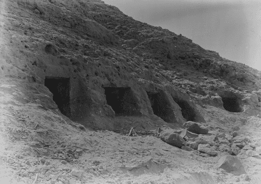
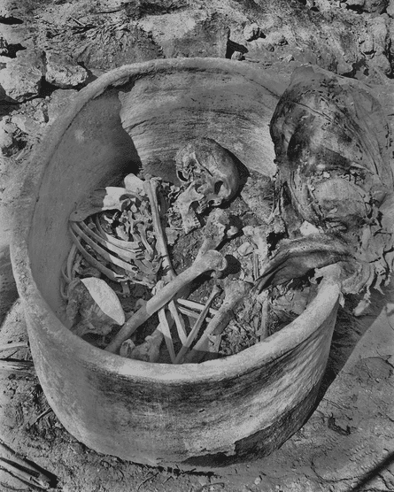
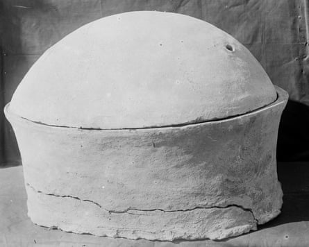

A man whose bones were shaped by a lifetime of hard labour more than 4,500 years ago has become the first ancient Egyptian to have his entire genetic code read and analysed by scientists.
The skeleton of the man, who lived at the dawn of the Age of the Pyramids, was recovered in 1902 from a sealed pottery vessel in a rock-cut tomb in Nuwayrat , 165 miles south of Cairo, and has been held in a museum since.
The man’s skeleton was recovered in 1902 from a sealed pottery vessel in a rock-cut tomb in Nuwayrat, 165 miles south of Cairo.Photograph: University of Liverpool
His DNA was remarkably well preserved given its age and the hot climate, which rapidly degrades biological material. Scientists suspect the unusual nature of the burial may have helped the DNA survive the past four millennia.
“It’s exciting that we can get genomes from this place and time,” said Pontus Skoglund, who leads the ancient genomics laboratory at the Francis Crick Institute in London. “It’s only one individual, but it provides a valuable first glimpse into the ancestry of an early Egyptian in the old kingdom.”
The skeleton was donated to the Liverpool Institute of Archaeology and later transferred to the city’s World Museum. There it survived bombings during the blitz that destroyed almost all of the other human remains in the collection.
Marks on the skeleton suggest the man spent long periods sitting on hard ground with his legs and arms extended and head down.Photograph: University of Liverpool
According to radiocarbon dating, the man lived a few centuries after the unification of upper and lower Egypt, a critical time of transition between the early dynastic period and the Old Kingdom, which spanned the third to the sixth dynasties. The Old Kingdom, also known as the Age of the Pyramids, was marked by significant progress including the construction of the first step pyramid at Saqqara .
DNA from one of the man’s teeth found he had dark skin, brown eyes and hair, and north African Neolithic ancestry mixed with a 20% genetic contribution from the Fertile Crescent region in the Middle East. The finding supports archaeological evidence of ancient trade between the two regions.
The pottery coffin.Photograph: University of Liverpool
The man’s bones cast further light on his story. Middle-aged, perhaps in his 60s, he was old for the time and riddled with arthritis. Marks on the skeleton suggest he spent long periods sitting on hard ground with his legs and arms extended and head down. His right foot revealed unusual signs of wear.
After studying tomb paintings of ancient Egyptian workers, the researchers suspect he may have been a potter or similar craftsman. The potter’s wheel was introduced to Egypt from the Fertile Crescent in about 2,500BC and was often stabilised with one foot. But the high-class burial, which took place before Egypt embraced artificial mummification, would have been unusual for such a worker.
Joel Irish, a professor of anthropology and archaeology at Liverpool John Moores University, said of all the occupations the team reviewed, the bone markings were most consistent with the man being a potter, but he might have been weaving baskets or doing other work on the ground.
Irish said: “It’s interesting that the man was found in a pot. That in itself is odd. He was put in a relatively high-class tomb and not any old person ends up in a rock-cut tomb. Maybe he was a super-good potter and ended up in someone’s favour.”
Skoglund said the work, published in Nature , sheds light on which tombs might harbour remains that are well-enough preserved to yield large amounts of DNA.
The team now plans to examine more skeletons in British collections to paint a fuller picture of the genetic history of the Egyptians. “There will be more individuals that we can get DNA from and we can use that to build an ancient, public genetic record of ancient Egypt,” he said.